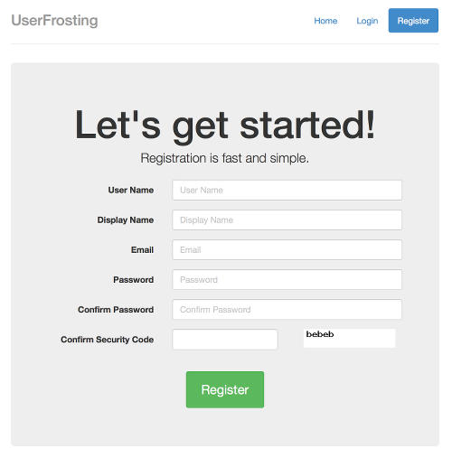

Chances are you've come here because you have a great idea for a user-oriented website, and you need a way to manage user accounts for your service/forum/orbital laser cannon without reinventing the wheel. UserFrosting delivers.
You may have even started to code and write content for your project. But whether it's a private forum for your WoW guild, an employee management system for your small business, or the next big social network, we're guessing that you probably want to get started on implementing your awesome new idea as quickly as possible. You most certainly do not want to spend your time writing code to manage user authentication and authorization.
There are, of course, frameworks that can do user management, but you don't want to spend your valuable time learning the ins and outs of a particular framework, only to discover that it's not really what you need. You might also have some existing code and content that you don't want to have to rewrite to fit the framework's way of doing things. UserFrosting is meant for developers who want to take advantage of a pre-designed user management system, but write their own code in native PHP.
Whatever the case may be, you probably want something that is ready to go straight out of the box, without forcing you to start from `Hello World`. UserFrosting delivers this and more. With some basic configuration and an easy-to-use installer, you'll be ready to create and manage user accounts in 5 minutes or less - all you need is a web server running PHP 5.4 or greater, and a SQL database.
UserFrosting is designed to have as few dependencies as possible. All you need to run UserFrosting is a web server of your choice, along with the following components:
Let users register an account with your site. We've provided everything you need for users to register, log in, manage their account, recover lost passwords, and more.
Create user groups, configure fine-grained user and group authorization rules, and set landing pages for when users log in.
Manage users and groups on your website with an intuitive administrative interface. Manually create user accounts.

UserFrosting comes with an automated installer that will set up your database and configuration files and create the root account. All you need to do is place the files in your home directory, go to http://yoursite/install, follow the steps and UserFrosting will do the rest. When you're done, simply delete the install directory.
The frontend uses the following technologies (included in the project):